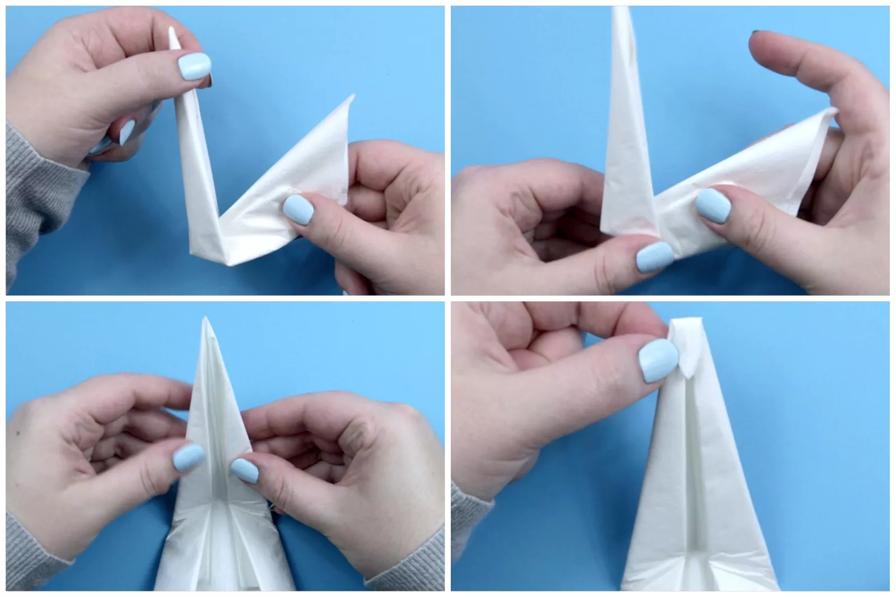

How to Make an Origami Napkin Swan
Impress your friends and family with a lovely origami napkin swan as
part of your table setting. All you need to make one is a simple
square white napkin. Paper napkins are easiest to work with, but
you also can make this swan with a cloth napkin that's been pressed
in half and in half again. Plus, ironing the cloth napkin while folding
the origami swan is recommended to make the creases precise. The origami
napkin swan is quite easy to learn, and once you understand the folds
you can get each swan done in a matter of minutes. This tutorial uses
a paper napkin, which is best for learning the process.
Start with your napkin nice and flat. If it's not already, fold the
napkin in half and in half again. And make sure the open points
of the napkin are at the top right corner.
Fold the napkin in half diagonally, bringing the bottom right corner
up to the top left corner. Crease the fold well.
Next, unfold the napkin back to where you started.

Fold the top left and bottom right corners to either side of the
crease you just made, leaving a narrow gap. The bottom
left corner should be a sharp point.
Next, fold the top left and lower right diagonal edges
in again to the same place, and crease them well.
Rotate the napkin so the bottom left point is pointing toward you,
and bring that point up to the very top point. But do not press this crease.
Then, fold the napkin in half, bringing the left side backward
to the right. The thinner point should be at the front,
wrapped around the larger back section.
Pull the longer point up to form the neck of the swan. Once you
have decided on the position for the neck, crease the base of
the neck well. Don't position the neck too far forward,
or the origami swan will topple over.
Open the neck, and focus on the back of the neck where
the head is going to be formed. Fold the top point
down a little more than a nail's width.

Taking the top of the point, flip it back over to create
a Z-shaped crease. This creates the beak, which can
be as long or short as you like.
Refold the body of the swan, and form the head bend by
creating diagonal folds (as shown in the bottom left photo).
Spend some time adjusting the beak and neck until you are
> happy with the shape. If you are finding this tricky,
it might be because your napkin is too thick. If it's
a two-ply napkin, you can peel off a layer. And if it's
a cloth napkin, make sure the creases are pressed as flat as possible.
To secure the tail of the swan so it won't fall over,
find the very last layer of napkin underneath the tail.
Pull on this flap and flip it over, creating a diagonal
crease on the inside of the swan.
Then, flip the swan to the other side, fold the tail over,
and then tuck it inside. If you wish, you can fold it
over one more time inside to completely secure it.

Start peeling the layers of the tail backward; you can
use all of the layers or just a couple. Peel them
toward the head, and then pull them up and out toward
the back of the tail. Be careful not to rip the paper
if you're using a paper napkin.

Our Purpose Is To Sustainably Make the Pleasure and Benefits of sports Accessible to the Many.
Copyright-2021 Abdul Haq